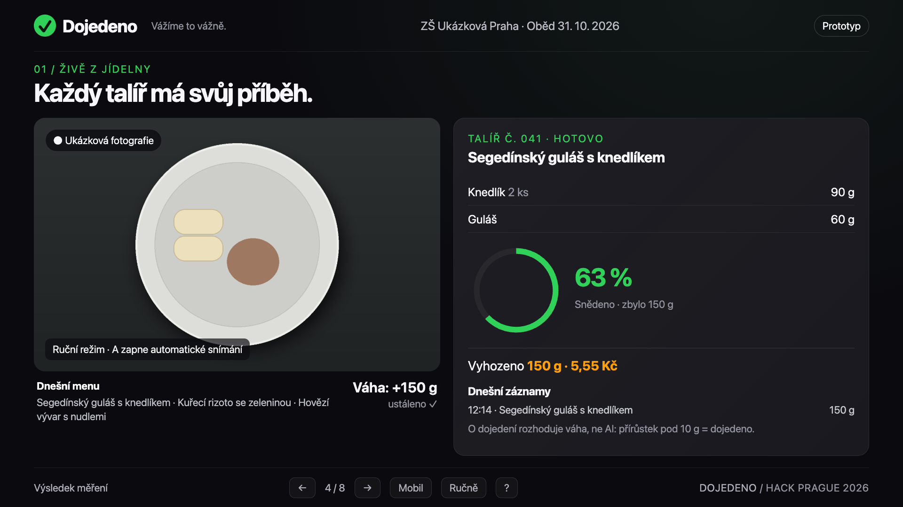

Co ukáže měření
Kolik se vrací
a co často zbývá.
Kilogramy z váhy, přehled z fotek
a počet skutečně vydaných obědů.
První pilot: naše škola v Hejčíně
Olomouc · Olomoucký kraj
Tohle je jeden školní oběd.
Jídelna jich denně vydá stovky.
Ve 4 sledovaných jídelnách skončila téměř třetina uvařeného jídla v koši.
Návrh pilotu · jeden pás + jeden vážený kbelík
Tohle je oběd ve školní jídelně.
Vážíme to vážně.
31%
uvařeného jídla ve 4 sledovaných pražských jídelnách skončilo v koši
Hack Prague 2026
Modelová škola · 500 žáků
600 000Kč
odhad roční hodnoty surovin v odpadu z talířů
Přibližně na žáka
1 200Kč
za školní rok. Jen suroviny ze zbytků z talířů. Není to celková ztráta ani příslib úspory.
Školní stravování v ČR · zdroj 2025
8 891
jídelen, výdejen a vývařoven
Širší systém stravování, nikoli počet našich cílových provozů.
Zdroj: Jak šetřit jídlem ve školních jídelnách, MENDELU 2025, s. 5, 9, 12. Finanční odhad: Prague Food Waste, čtyři pražské ŠJ.
Podíly hmotnosti veškerého zaznamenaného odpadu · 4 pražské jídelny
zbytky z talířů
nevydané pokrmy
příprava
Hlavní zaměření pilotu
Fotky ukážou opakující se zbytky.
Váha změří jejich celkovou hmotnost.
Samostatná evidence
Nevydané jídlo sledujeme zvlášť.
Další využití ≠ vyhozené jídlo.
31 % je jiná metrika: vyřazené pokrmy / uvařené jídlo, bez odpadu z přípravy.
Zdroj: Prague Food Waste / MENDELU 2025, s. 6–9. Výsledky čtyř pražských ŠJ; nejde o průměr všech českých škol.
Co ukáže měření
Kilogramy z váhy, přehled z fotek
a počet skutečně vydaných obědů.
Co musíme ověřit
Stejný zbytek může mít různé příčiny.
Změnu vybereme s vedoucí a kuchařkami.
Měření → jedna změna → opakované měření.
Prague Food Waste: ve 4 pražských školách ruční vážení a rozhovory. Průběžná automatizace je náš návrh k ověření.
ještě před vysypáním
skutečný přírůstek v kbelíku
pokud se pořadí při vysypání nezmění
Cíl: bez zastavování talířů
Fotka zbytků,
čas a pořadí.
Jeden tok
do jednoho kbelíku.
Ustálený přírůstek
po vysypání.
Jen při zachovaném
pořadí a jasné události.
Váha změří celek. Druh a zastoupení jídla z fotky jsou odhad.
Při nejistotě společná dávka. Následuje demo: talíř + čtení displeje váhy.
Schéma navrhovaného pilotu, +150 g je ilustrace. Párování pásu s váhou ještě není implementované v živém demu.

Demo zatím neběží
V Terminálu spusť:
cd ~/Documents/hack-prague-2026/demo && python3 tools/serve.py
Slajd se sám připojí. Mezerníkem lze pokračovat dál.
1.–2. týden
Každý den zvážíme vrácený potravinový odpad a spočítáme vydané obědy.
Stejný sledovaný provoz a hranice měření.
3.–4. týden
S kuchařkami vybereme úpravu receptury nebo volitelnou menší přílohu.
S možností přidání a dodržením výživových norem.
5.–6. týden
Porovnáme výsledek s výchozím stavem. Nejvýše dvě iterace opatření.
Zohledníme menu, počet strávníků a zpětnou vazbu.
Hlavní KPI · každý den
Naměřená hmotnost / skutečně vydané obědy
Návrhový cíl pilotu
−10 %proti výchozímu stavu z 1.–2. týdneModelový příklad: −10 % z 600 000 Kč = 60 000 Kč ročně jako modelová hodnota omezených zbytků. Ne čistá úspora.
Vedoucí jídelny
Co se vrací a zda navržené opatření pomohlo.
Ředitel
Srovnání se začátkem pilotu místo slibu úspory.
Kuchařky
Bez ručního zápisu každého talíře. Provozní nároky ověříme.
Chuť, velikost porcí a dost času na oběd. Soutěže tříd až jako možný další krok.
Ověřit pořadí talířů, úklid
a čas obsluhy navíc.
Změny schválí vedoucí.
Možnost přidání a kontrola norem.
Záběr bez obličejů a identit.
Režim dat ověříme se školou.
Když provoz nebo data nevyhoví, pilot upravíme či zastavíme.
Plán: naše škola v Hejčíně · Olomouc · Olomoucký kraj
Kolik gramů se vrací
na vydaný oběd?
Jedna receptura nebo
volitelná velikost přílohy.
Potvrdit výsledek, případně
vyzkoušet druhou variantu.
Na konci: pokračovat / upravit / zastavit.
Nedostatek dat = neprůkazný výsledek.
Start po souhlasu školy, instalaci a ověření měření. Termín a jednopásové místo zatím nepotvrzené. Podpora Hack Prague mimo Prahu: ověřit s organizátory.
Méně gastroodpadu na vydaný oběd.
Hledáme podporu pro ověření první sestavy v jídelně.
ještě před vysypáním
skutečný přírůstek v kbelíku
čas + pořadí + odhad z fotky
při nejistotě společná dávka
Bez zastavování talířů
Q&A · rozpočet
Jedna jídelna · šest týdnů · včetně času týmu
| Položka | Množství | Cena / jednotka | Celkem | Stav ceny |
|---|---|---|---|---|
| Telefon | 1 ks | 2 500 Kč | 2 500 Kč | Odhad |
| Váha s datovým výstupem | 1 ks | 5 000 Kč | 5 000 Kč | Odhad |
| Držák a kryt | 1 sada | 1 000 Kč | 1 000 Kč | Odhad |
| AI a internet na 6 týdnů | 1 balíček | 1 000 Kč | 1 000 Kč | Odhad |
| Práce týmu | 16 hodin | 250 Kč / h | 4 000 Kč | Odhad |
| Doprava | 1 paušál | 500 Kč | 500 Kč | Odhad |
| Rezerva | 1 paušál | 2 000 Kč | 2 000 Kč | Odhad |
| Celkový návrh rozpočtu | 16 000 Kč | Odhad | ||
Žádná položka zatím nemá potvrzenou nabídku. Před startem ověříme ceny, rozsah práce i financování.
Q&A · provoz ve škole
01
Nejisté přiřazení necháme jako společnou dávku. Gramy na talíř si nevymyslíme.
02
Porce schvaluje vedoucí jídelny podle norem. Hlídáme dostupnost jídla i přídavků.
03
Změříme minuty obsluhy. Ověříme úklid, stabilní uchycení a průchodnost provozu.
04
Záběr talířů bez obličejů a identit. Použití cloudu posoudí pověřenec školy.
05
Protokol určí, co se váží. Zvlášť řešíme vodu, ubrousky, polévku a výpadky.
06
Ověříme celkové náklady, ochotu platit a konkrétní osobu odpovědnou za podporu.
Škola může pilot odmítnout nebo zastavit. Souhlas s provozem ani ochota platit zatím nejsou potvrzené.
Q&A · zdroje
Čtyři pražské jídelny · měření 2023–2024
Výsledky zveřejněné 25. 6. 2024
Brožura MENDELU, vydání 2025
Metodika a doporučení pro jídelny
Vyhláška 107/2005 Sb.
Konsolidace k 1. 7. 2026
Nakládání s odpadem z jídelen
Zákaz jeho zkrmování
Doporučení č. 1/2025
Záběr, účel a ochrana soukromí
Bezpečná spotřeba, HACCP,
sledovatelnost a předání
31 % z uvařených pokrmů není cíl redukce.
48 / 43 / 9 % je rozdělení celého odpadu — jiný jmenovatel.
Q&A · další kroky
Termín, souhlas školy i rozpočet zatím čekají na potvrzení. Rozšíření závisí na výsledku pilotu.
Cenu, dostupnost v ČR a náklady zavedení musíme porovnat.
−50%
kuchyňského odpadu v IKEA Česko, i na Zličíně
kamera a váha u koše, Winnow
Výzkumníci vážili ručně, asi týden na každé škole
1 týden s daty
mimo tento výzkumný vzorek
Brno · čočka nakyselo
80kg
běžný den
19kg
den, kdy děti vážily
Příklad zapojení dětí. Ne důkaz účinku našeho systému.
Zdroje: Prague Food Waste 2024 (Zachraň jídlo, Mendelova univerzita); Mendelova univerzita: Jak šetřit jídlem ve školních jídelnách (2025), s. 19.